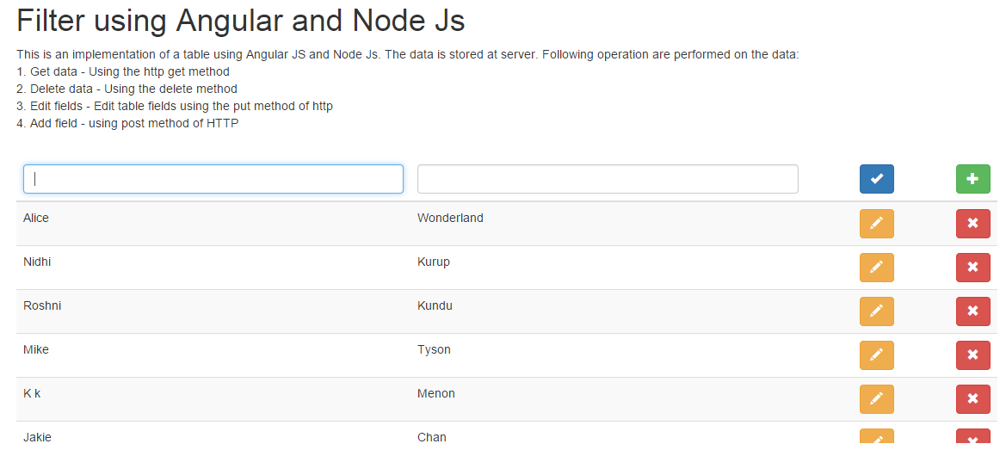

The page will fetch the data from the server and display it using angularjs. The developer data consists of the array of developer details (firstName, lastName) stored at the server. We fetch the data using the get http request and bind it to the view.
This experiment demonstrates how to fetch data from a node js server and bind it to the ng-view attribute. The controller fetches the data using the http get request and binds it to the view in the angular application.
Call to the server
$http.get("/developers").success(function (response) {
$scope.developers = response;
});